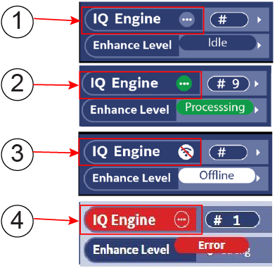
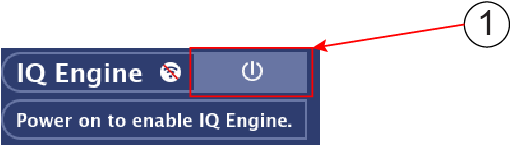
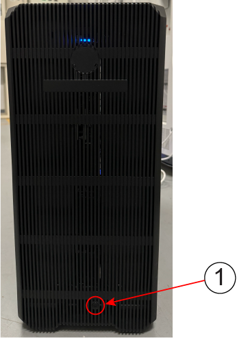
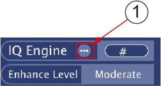

- 00000018WIA30E11AB0GYZ
- id_20549281.11
- Mar 5, 2024 7:57:15 AM
Reset/Power on/off
About this task

| Item | Description |
|---|---|
| 1 | Idle: The system is in idle. |
| 2 | Processing: It is shown when there are processing tasks in progress. |
| 3 | Offline: When the system shuts down and the network is disconnected, and the background service is suspended and displayed as offline. |
| 4 | Error: If there are failed tasks in the task list not marked as ignored, an Error status will be displayed. |
There is 3 functions on IQE window Home tab. They are:
- Power On
- Power Off
- Reset
Power On
Procedure
Go to the IQE window, click Power On button.

| Item | Description |
|---|---|
| 1 | Power On button |
Note IQE needs to be powered up manually in equipment room when IQE is set Disabled and IQE server in Power off status.Figure 1. Power on button in IQE Box in equipment room

| Item | Description |
|---|---|
| 1 | IQE Power on button |
After power on, the IQ Engine shows in window.
